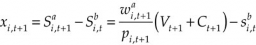
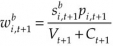
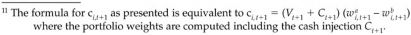

max wa l c 2Af wbc Awa wa
wa
(10.14)
subject to the constraint that the sum of weights should be 1 and any other constraints. This problem cannot be solved by a conven- tional quadratic optimization technique because c is a function of w. In Appendix 10A we present a simple technique that will produce an approximate solution.
10.6 DEALING WITH CASH FLOWS
As we mentioned in the introduction to this chapter, a manager sometimes has to rebalance the portfolio, or at least make addi- tional investments outside the regular rebalancing schedule. Cash inflows and outflows require this sort of extra rebalancing. In this section we discuss some common methods that the portfolio man- ager can use to reduce transactions costs in the presence of cash flows. The first method involves investing cash temporarily in index futures or exchange-traded funds (ETFs) until there is a bet- ter time (such as the next scheduled rebalancing period) to return it to the portfolio. The second method involves purchasing specific, perhaps more liquid, stocks so as to achieve target portfolio weights through fewer transactions.
10.6.1 REDUCING TRANSACTIONS COST USING FUTURES AND ETFS
For portfolio managers who have daily cash inflows and out- flows, adjusting the portfolio at each cash movement is just not
practical.10 For the typical fund, daily flows are small relative to the fund’s assets, and new contributions frequently offset fund redemptions. For such a fund, net inflows can be invested temporarily in cash or money market instruments without adversely affecting the portfolio return. Conversely, the fund’s cash buffer can handle small redemptions, avoiding the need to liquidate any stocks. However, for funds with large daily net flows, maintaining a large cash reserve will negatively affect the portfolio return, especially in an environment of low interest rates. If outflows are large, the manager cannot rely on the cash buffer to meet redemptions and may be forced to liquidate part of the portfolio. This, of course, can be particularly problematic if there is low liquidity or if spreads are wide in some of the stocks.
In such cases, the manager might be better off adjusting his or
her exposure in one of two ways, either by equitizing cash with index futures or by purchasing an exchange-traded fund (ETF) that invests in the same sector as the fund or a sector very correlated with the fund. ETFs recently became a more feasible solution for many funds when the Securities and Exchange Commission (SEC) lifted some restrictions on ETF ownership in mutual fund portfo- lios. Even with the wide availability of sector-specific ETFs, how- ever, a manager still might prefer to use futures because futures have three distinct advantages over ETFs: futures are more liquid in normal trading hours; they can be traded after hours on GLOBEX; and they have an added tax benefit in that gains are treated as partly long term and partly short term.
10.6.2 Rebalancing toward Optimal Target Weights
Whether in a period of cash flows or at the point of conducting reg- ular rebalancing, a portfolio manager can make the necessary trades in such a way that the portfolio maintains an optimal mix of stock weights. Imagine a portfolio that is rebalanced monthly and experiences cash flows at the end of the month. When it comes time for the monthly rebalancing, the manager can either trade so that he or she maintains the original optimal portfolio weights or so that he or she achieves the new optimal weights determined by

10 This section is a brief summary of Chincarini (2004).
updating/reestimating the model. At the end of the month, the manager faces cash flows but can trade in such a way as to redirect the portfolio toward either the original or new optimal target weights. In the following subsections we discuss the algorithm that enables the manager to conduct optimal trades first in the case of regular rebalancing and then in the case of cash flows. In the analy- sis, we do not include trading costs per se. Rather, we show that by reducing the amount of trading, we can reduce tax costs, as well as direct trading costs.
Standard Rebalancing
Standard rebalancing assumes that the portfolio manager has a target set of stock weights to which he or she wants to rebalance the portfolio. If the portfolio tracks a benchmark, then the target weights are those of the benchmark. Unless a new optimal portfolio with new stock weights has been constructed since the last rebal- ancing date, standard rebalancing involves selling the “winners” and buying the “losers” of the period since the last rebalancing date. You may be wondering why anyone would want to buy the losers. The reason is that the portfolio manager is concerned about the weights of stocks within the portfolio, not about their individual returns during a given period. Stocks that have performed relative- ly well will have gained weight in the portfolio so that they now exceed their targets; stocks that have done less well will have lost weight so that they now fall short of their targets. Rebalancing means restoring the weights back to their target levels.
i
i
i
Some notation may be useful. Let’s call wb the weight of stock
i
i
i
i
i
i
i
i
i
i in the portfolio before rebalancing, wa the target weight of each stock i, pi the price per share of stock i, sb the number of shares owned in stock i of the portfolio, and sa the number of shares implicitly held in the optimal portfolio. The weights of the target portfolio and of the current portfolio at any time t are given by
p sb
w
w
w
b
i,t
w
w
w
a
i,t
i,t i,t
Vt
p sa
i,t i,t
Vt
(10.15)
(10.16)
At any point in time, one can calculate the difference between the target weights and the current portfolio weights and use this
difference to rebalance the portfolio. The number of shares of each stock that must be bought or sold at time t + 1 is given by

where Vt+1 is the value of the portfolio at time t + 1 before rebalanc- ing, and Ct+1 is any monetary contribution to (or withdrawal from) the portfolio at time t + 1. The excess shares, xi,t+1, are negative if one needs to sell shares of the stock and positive if one needs to buy more of the stock. One should bear in mind that these formulas do not take into account the bid-ask spreads or the price impact, both of which slightly distort the rebalancing procedure and create costs to the portfolio.
An Example
This example of standard rebalancing involves a portfolio of seven stocks (A through G). Table 10.1 considers the portfolio at times t and t + 1. At time t, the portfolio is valued at $6,173.75; by time t + 1, it has increased to $6,367.50. At time t, the portfolio contains the opti- mal target stock weights, but as stock prices change between times t and t + 1, the portfolio drifts out of alignment with the targets. The table shows the difference between the weights at times t (optimal weights) and t + 1 (misaligned weights). The “Shares to buy/sell” row of the table gives the results of the formulas that we presented
T A B L E 1 0 . 1
Standard Rebalancing
Stock Holdings
Date | A | B | C | D | E | F | G | |
t | Price per share | 90 | 34.5 | 23.0625 | 65.125 | 72 | 4 | 20 |
Shares owned | 20 | 20 | 20 | 20 | 20 | 20 | 20 | |
Weight | 0.2916 | 0.1118 | 0.0747 | 0.2110 | 0.2332 | 0.0130 | 0.0648 | |
t+1 | Price per share | 94 | 32 | 21 | 68 | 79 | 4.25 | 20.125 |
Shares owned | 20 | 20 | 20 | 20 | 20 | 20 | 20 | |
Weight | 0.2952 | 0.1005 | 0.0660 | 0.2136 | 0.2481 | 0.0133 | 0.0632 | |
Rebalance shares | 19.7499 | 22.2392 | 22.6536 | 19.7555 | 18.7999 | 19.4143 | 20.4995 | |
Shares to buy/sell | —0.2501 | 2.2392 | 2.6536 | —0.2445 —1.2001 —0.5857 | 0.4995 | |||
Adjusted weight | 0.2916 | 0.1118 | 0.0747 | 0.2110 0.2332 0.0130 | 0.0648 | |||
Dollar value | 1856 | 712 | 476 | 1343 | 1485 | 83 | 413 | |
earlier for calculating the number of stock shares to sell or buy in order to return to the optimal scenario.
Using Cash Flows to Rebalance without Selling
Often it is less costly to let a portfolio drift toward the optimal tar- get portfolio rather than make trades that try to match it exactly. There are tax costs associated with rebalancing owing to the selling of securities with capital gains. There is also a transactions cost with each purchase or sale of a security. Thus the manager can choose to not sell any securities but only buy more shares of the securities whose weights have fallen below target. While it does not rebalance the portfolio immediately, this method gives the portfolio a push in the right direction. It is easy to give the portfo- lio a push by using any cash inflows to add, proportionally to the optimal target weights, to all the portfolio’s existing positions. A slightly harder push, investing the cash inflows according to an algorithm, will send the portfolio a bit faster toward the optimal weights.
The easiest method is to divide the cash inflows among all
the portfolio’s securities in amounts proportional to the target weights. Thus, if one has $Ct+1 in cash to inject into the portfolio at time t + 1, then one will purchase xi,t+1 of each security:
i,t
i,t
i,t
i,t+1
i,t+1
i,t+1
xi,t+1 = Ct+1w a +1/p
(10.18)
The new weights that result from this process will fall in between the weights before adjustment and the optimal target weights. Their proximity to the target weights will depend on how large Ct+1 is relative to Vt+1.
An Example
We return to the example of stocks A through G. Now, instead of doing the standard rebalancing, let us rebalance by distributing the cash flow C across the entire portfolio in proportion to the target weights.
The cash injection Ct+1 = $2000. One can see from Table 10.2 that the weights slowly converge to the target weights.
Another method for helping the portfolio gravitate toward the benchmark weights more quickly is to invest the new cash only in stocks that are below their corresponding target weights. All the stocks in the portfolio are divided into two groups, one in which stocks exceed their target weights (i.e., wb > wa) and another in
T A B L E 1 0 . 2

Rebalancing by Purchasing at Target Weights
Stock Holdings
Date | A | B | C | D | E | F | G |
t Price per share | 90 | 34.5 | 23.0625 | 65.125 | 72 | 4 | 20 |
Shares owned | 20 | 20 | 20 | 20 | 20 | 20 | 20 |
Weight | 0.2916 | 0.1118 | 0.0747 | 0.211 | 0.2332 | 0.013 | 0.0648 |
t+1 Price per share | 94 | 32 | 21 | 68 | 79 | 4.25 | 20.125 |
Shares owned | 20 | 20 | 20 | 20 | 20 | 20 | 20 |
Weight | 0.2952 | 0.1005 | 0.066 | 0.2136 | 0.2481 | 0.0133 | 0.0632 |
Shares to buy/sell | 6.2033 | 6.9852 | 7.1154 | 6.2051 | 5.9050 | 6.0979 | 6.4388 |
New shares owned | 26.2033 | 26.9852 | 27.1154 | 26.2051 | 25.9050 | 26.0979 | 26.4388 |
Adjusted weight | 0.2944 | 0.1032 | 0.0681 | 0.2130 | 0.2446 | 0.0133 | 0.0636 |
which stocks fall short of target weights (i.e., wb < wa). It is impor- tant to calculate these weights after the cash has entered the portfo- lio. The weight of each stock with the cash inflow is

All these portfolio weights should be compared with their cor-
responding target weights (wa ). We must figure out how much of
i,t+1
the cash should be allocated to each of the stocks that are below tar-
get weight. Suppose that for the first nu stocks (i = 1, …, nu), the weights are below the target weights. Let us call the cash allocated to stock i, ci,t+1. We can determine this amount for each stock:
ci,t+1 = wa (V
+ C ) – sb p
(10.20)
i,t+1
t+1
t+1
i,t+1
i,t+1
After the ci,t+1 have been calculated,11 we need to calculate the
sum of them: nu c . We then take the difference between the
i =1 i,t+1
i =
i =
i =
sum and C. The difference, which represents the amount of slack funds (xs,t+1), equals Ct+1 – nu 1 ci,t+1. This number always will be less than or equal to zero. It will equal zero when there are enough funds (enough cash) to perfectly rebalance the portfolio. It will be less than zero when there are too few funds (too little cash) to
restore deficient stocks to their required weights. In that case, the amount of cash distributed to each stock will have to be scaled

down proportionally.12 The number of shares xi,t+1 that need to be purchased of each stock is
ci,t1

p
if x
s,t1 0
xi,t1
i,t1
c
Ct1
(10.21)
i,t1
p
nu c
if xs,t1 0
i,t1
i1
i,t1
The benefit of this type of “buy” system for rebalancing is that it should make the portfolio converge toward the optimal target weights at a faster rate than it would if we simply invested in the stocks in proportion to the target weights.
A manager might want to know exactly how much cash he or she would need to rebalance the portfolio using this system of pur- chasing deficient stocks. There are a few steps to figuring this out. The first step is to determine the stocks that are overweight before any cash injections. Suppose that there are nO of those stocks. The second step is to calculate the values for every overweight stock in
the portfolio:
wb
w
w
w
i,t1 1
a
a
a
i,t1
(10.22)
before new money has been added. The third step is to find the max- imum of those values, that is,
max
wb
1,t1
wa
wb
1, 2,t1
wa
1, ,
b
w
w
w
no ,t1
wa
1
(10.23)
1,t1
2,t1
no ,t1
The last step is to multiply the maximum by the total value of the portfolio at time t+1, Vt+1. The resulting number is the minimum amount of money needed to perfectly rebalance the portfolio with- out selling.
An Example
This example considers the same portfolio as the one in the two preceding examples. In this case, however, the rebalancing method

12 The portfolio will match the target portfolio exactly when slack funds equal zero—that is,
when nu c
or, alternatively, when nu
(wa
– wb
) = C
/(V
+C ). This
i =1
i,t+1
i =1
i,t+1
i,t+1
t+1
t+1
t+1
only happens at the point at which all stocks have become “deficient,” and a bit of money must be added to each of them.
316 PART II: Portfolio Construction and Maintenance

T A B L E 1 0 . 3
Rebalancing by Purchasing Only Deficient Stocks
Stock Holdings
Date | A | B | C | D | E | F | G |
t Price per share | 90 | 34.5 | 23.0625 | 65.125 | 72 | 4 | 20 |
Shares owned | 20 | 20 | 20 | 20 | 20 | 20 | 20 |
Weight | 0.2916 | 0.1118 | 0.0747 | 0.211 | 0.2332 | 0.013 | 0.0648 |
t+1 Weight after | 0.2247 | 0.0765 | 0.0502 | 0.1625 | 0.1888 | 0.0102 | 0.0481 |
cash flow
Cash allocated 559.6032 295.1812 205.1483 405.324 371.6825 23.4268 139.634